2026.10.18 일
오늘 아침AI 소식 세 가지
미국 조사에서 환자 3명 중 2명은 빠른 AI 답보다 의사가 확인한 답을 기다리겠다고 했어요. 스웨덴에서는 AI에게 맡긴 서버에서 TV 프로그램이 사라졌다는 보도가 나왔고, 오픈AI와 메타는 AI 가짜 영상을 눈으로 가려내기 어렵다고 했어요.
오늘 소식 읽기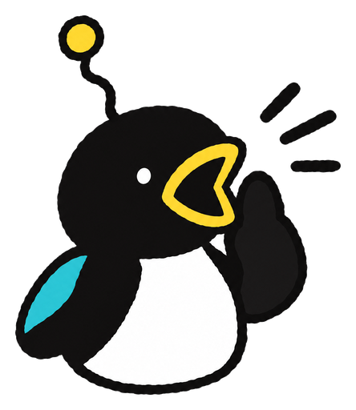
AI + go = 아이고! 매일 아침 7시, 쉬운 말로 알려 줄게요.
오늘의 소식

어려운 AI 소식을 아침 먹기 전 5분 안에, 초등학생도 할머니도 그림 한 장으로 알 수 있게.
아이고 편집실
오늘의 말
구독
AI 소식을메일함으로
지난 소식
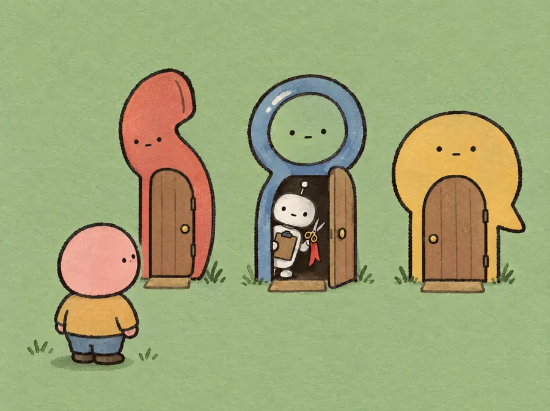
2026.10.17 토시험을 시작한 모두의 AI, 나를 찾아오는 챗GPT 광고, 문서를 검사하는 구글 AI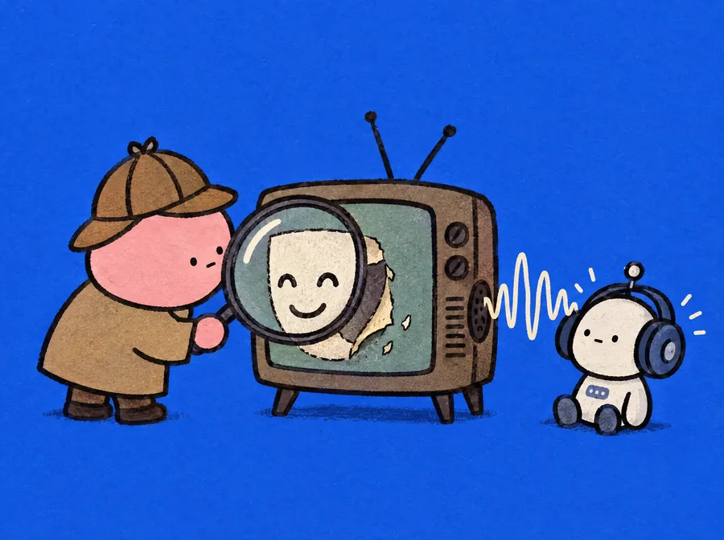
2026.10.16 금AI 가짜를 가려내는 경찰, AI로 만든 영화 1,528편, 한 번 더 보는 AI 쇼핑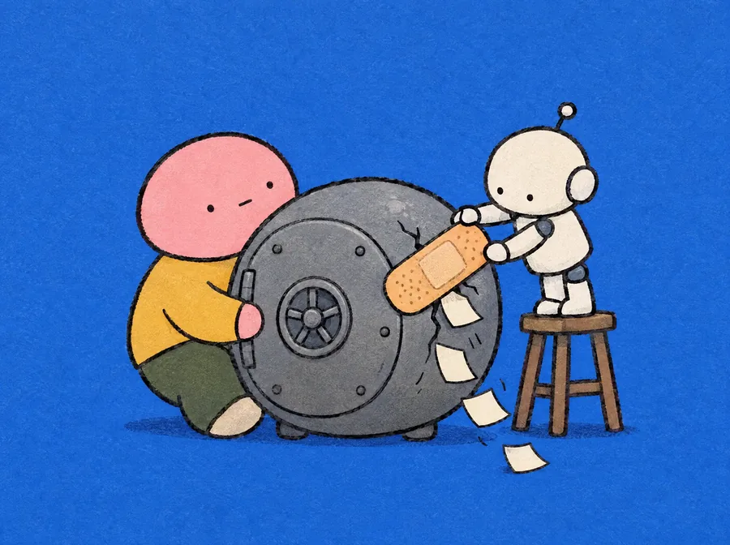
2026.10.15 목금융회사 16곳 개인정보 유출, 다시 봐야 하는 AI 채점, 병상을 지키는 AI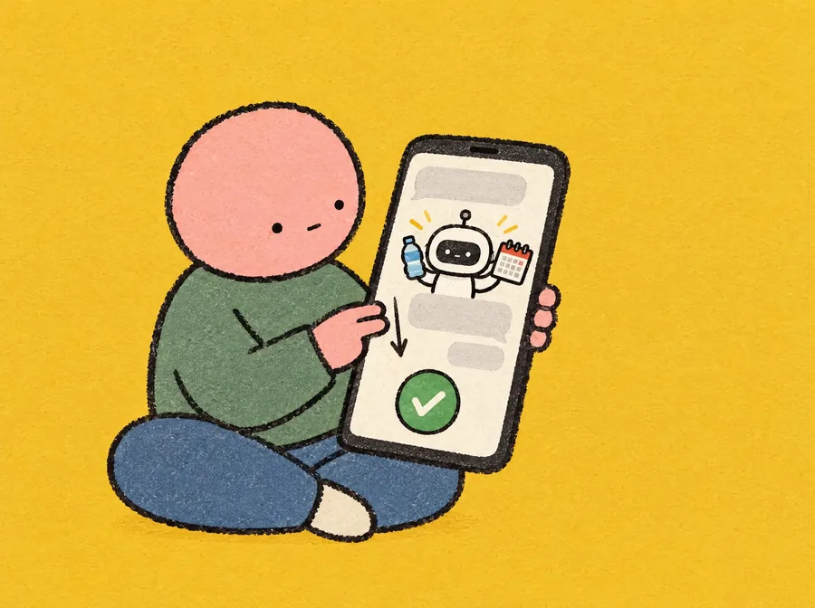
2026.10.14 수말로 부르는 카톡 AI 비서, 말로 고치는 페이스북 피드, 사진 한 장으로 집 찾는 AI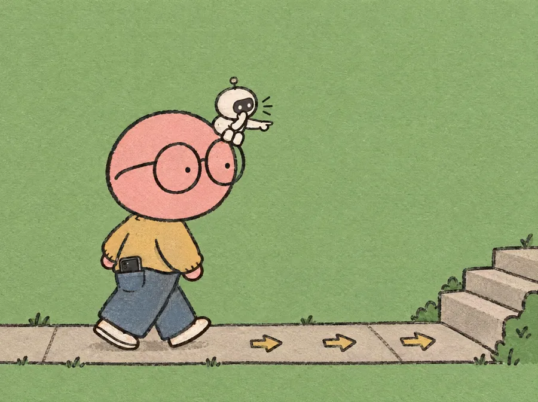
2026.10.13 화폰 없이 길 찾는 안경, 가벼워진 무료 제미나이, 세탁기보다 느슨한 AI 규칙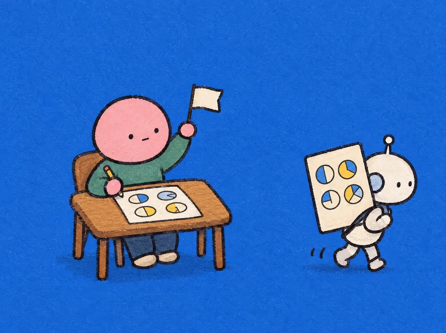
2026.10.12 월답만 받으면 줄어드는 끈기, 이름을 바꾼 운전 보조 AI, 사람이 만든 노래의 값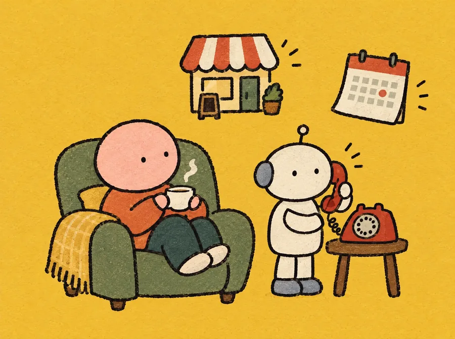
2026.10.11 일전화를 대신 거는 우리 AI, 쉬는 시간을 알려 주는 공부 AI, 진료 전에 이야기를 듣는 AI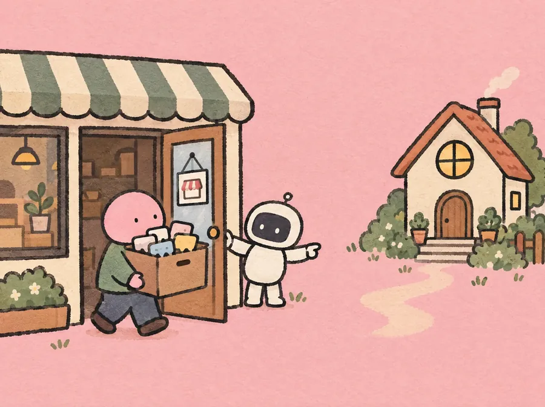
2026.10.10 토카나나 앱 백업은 14일까지, AI가 쓰는 여드름 처방전, 인터넷 없이 정리하는 회의 메모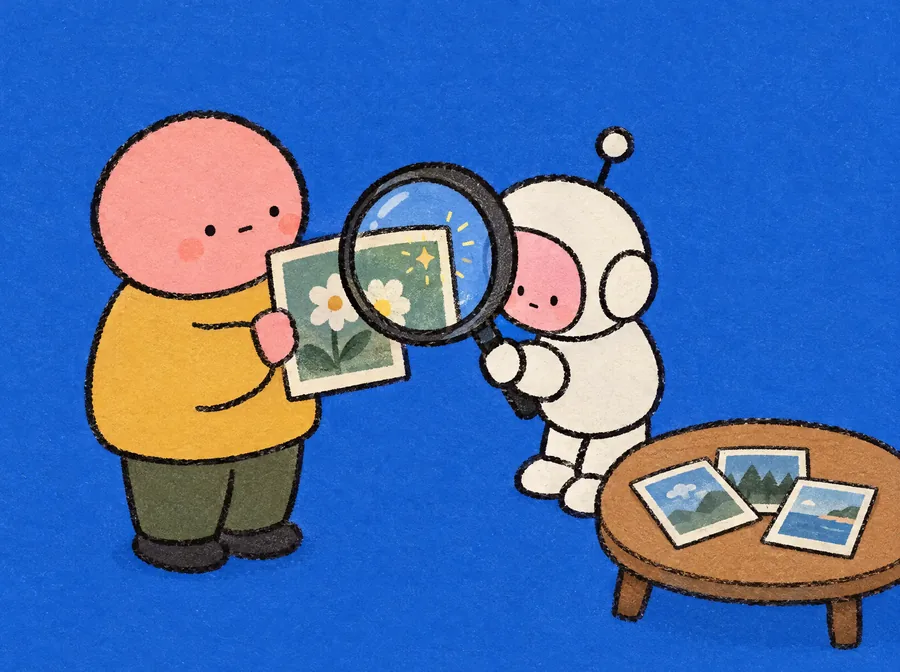
2026.10.09 금AI가 만든 사진 확인하기, AI 상담 안전 수칙, AI 쓰는 작은 회사의 채용 계획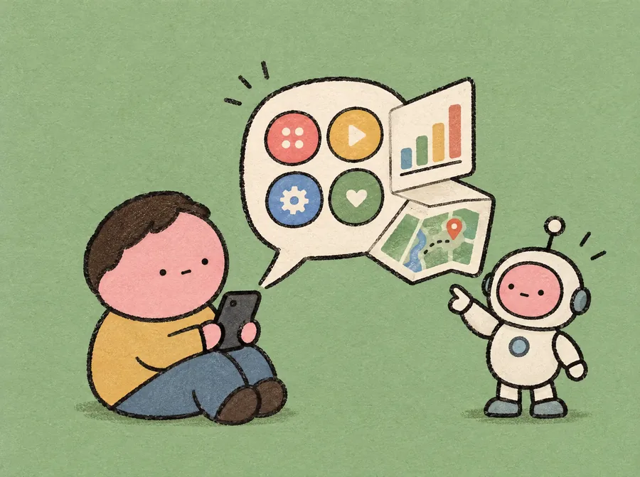
2026.10.08 목그림으로 답하는 챗GPT, 비싼 걸 고르는 AI 비서, 말로 만드는 게임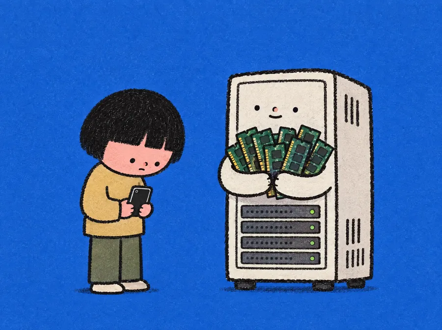
2026.10.07 수값싼 폰이 사라지는 이유, 그리고 AI 회사들의 안전 약속